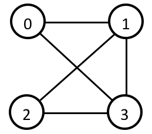

Miscallenous Nodes¶
Plot Graph¶
[image]
To Adjacency List¶

Description¶
Converts data from a paired list to an adjacency list. See remarks for the definition of paired lists and adjacency lists.
Input sockets¶
| Name | Type | Shape | Description |
|---|---|---|---|
| bonds | list(2i) | any, 2 | the paired list to convert |
| parcount | int | - | total number of indices |
| size | int | - | list size per index |
Output sockets¶
| Name | Type | Shape | Description |
|---|---|---|---|
| list | list(2i) | parcount, size | the converted adjacency list |
Remarks¶
{kind=link}
A paired list is pairs of indices indicating “bonds”. For example, the connection above can be represented with the paired list below.
0 1
0 3
1 2
1 3
2 3
An adjacency list, on the other hand, stores the indices connected to each index in a table-wise fashion. For example, the same connection can be represented with the adjacency list below. Note that each index entry occupies a line.
1 3 -1
0 2 3
1 3 -1
0 1 2
In this case, the size of the list is 3, meaning each index can be connected to a maximum of 3 other indices.
An error will be output if the size is not big enough to accomodate the whole connection.
Tip
In general, paired list are preferred for its data density (all connections only appear once, and there are no padding values). However, an adjacency list is faster to search for a connection, so use them wisely!
To Paired List¶

Description¶
Converts data from an adjacency list to a paired list. See remarks above for the definition of paired lists and adjacency lists.
Input sockets¶
| Name | Type | Shape | Description |
|---|---|---|---|
| adjlist | list(2i) | any | the adjacency list to convert |
Output sockets¶
| Name | Type | Shape | Description |
|---|---|---|---|
| list | list(2i) | variable, 2 | the converted linked list |